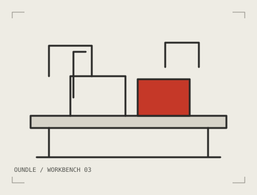

01 / CLEAR BY DESIGN
A labelled connection.
Visible functions and readable specifications help a learner trace cause and effect.
Modular robotics / Oundle, England
Low voltage. Open connections. Useful questions.
THE COMPANY / OUNDLE
We are a small learning-hardware team in Oundle. We make parts that invite a closer look, and projects that leave a useful question on the table.

We started with a familiar classroom moment: the model works, but nobody can explain which part did what. Our answer is a smaller, more visible system.
Each module has a clear function, a readable connection and a specification worth checking. Each project starts with a question and leaves room to test it twice.
We make small runs, revise the notes as carefully as the hardware and help people choose a manageable first build.
01 / CLEAR BY DESIGN
Visible functions and readable specifications help a learner trace cause and effect.
02 / SMALL BY CHOICE
A thoughtful first test is more useful than a complicated machine assembled in a hurry.
03 / OPEN TO ANOTHER GO
Connections, fasteners and project notes are designed to be revisited, changed and understood.
VISIT THE WORKBENCH
Studio 4, Workshop Yard, East Road, Oundle PE8 4BX. Visits are by appointment so we can make room on the bench and arrange the right people to help.
Monday–Friday, 09:00–17:00 · 01632 960806
Please contact us before travelling, particularly around bank holidays. Ground-floor workbench; tell us what would make a visit easier.
Arrange a workbench visitYou do not need to arrive with a complete parts list. A clear starting question is enough.